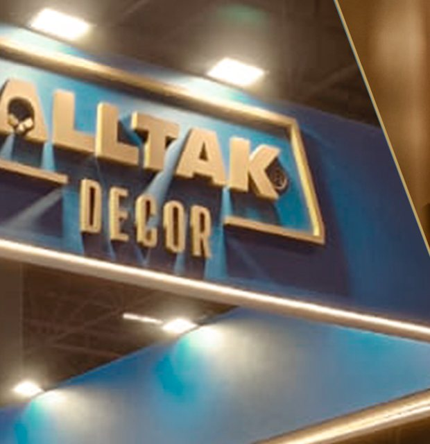
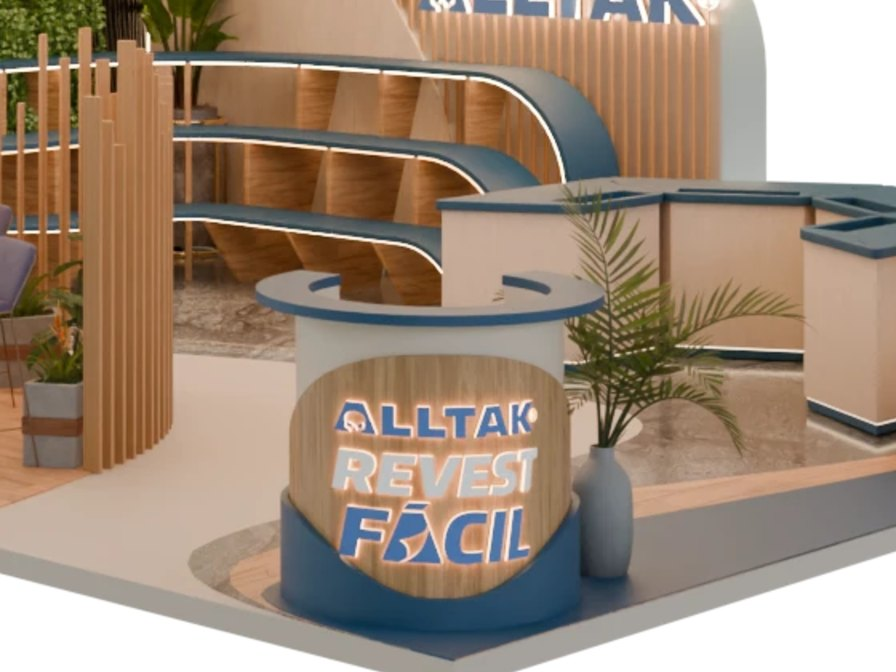
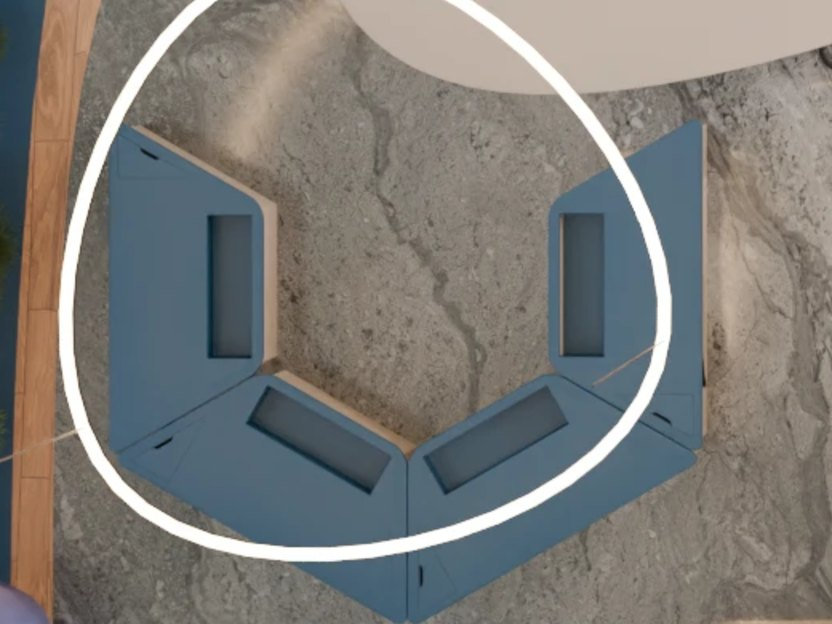
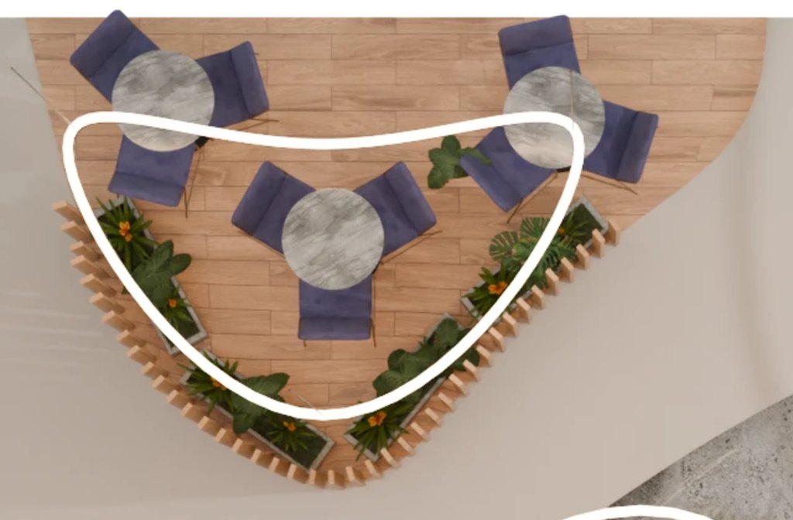

01
A forma do gesto
As faixas suspensas são um rolo que se desenrola sobre o stand. Curvas no lugar de ângulos retos: a arquitetura mostra o que o produto faz.


Proposta de stand · Haus Decor Show 2027
Um rolo que se abre sobre o stand para lançar RevestFácil, o revestimento vinílico adesivo da Alltak, e provar, nas mãos de cada visitante, que transformar não precisa ser complicado.
Capítulo 02
De "Alltak Decor" a RevestFácil: como a marca aprendeu, feira a feira, a falar a língua da decoração.

A estreia2025
"Harmonize quando quiser. Revele quando precisar."
O que aprendemos
A marca se fez ver, mas o conceito ficou pouco evidente para o público de decoração. Estoque subdimensionado e corredor lateral pouco aproveitado.



A virada para decoração2026
"Ambientes que mudam no ritmo da vida."
O que aprendemos
As amostras para pegar na mão foram o maior sucesso. A feira virou laboratório e termômetro do RevestFácil. Peças de PDV precisam ser simples e replicáveis.
Três ideias que guiam o projeto
As faixas suspensas são um rolo que se desenrola sobre o stand. Curvas no lugar de ângulos retos: a arquitetura mostra o que o produto faz.

A oficina transforma a promessa em prova. O visitante aplica, sente o acabamento e leva o resultado para casa.

O RevestFácil é o protagonista. A Alltak, com 25 anos de indústria, assina como garantia de qualidade, tecnologia e confiança.
Nova linguagem, mesma origem
O stand sai da linguagem rígida e comercial das últimas edições e chega a uma arquitetura fluida e autoral. Os códigos da marca continuam lá, como assinatura.

Capítulo 04
Atributo por atributo: o que cada elemento faz pela marca e pelo visitante.
Visão geral
Passe o mouse ou toque nos pontos. Clique para ir ao detalhe.
Planta e setorização

É o gesto do conceito em escala arquitetônica e o primeiro contato de quem passa: faixas que se soltam do alto como camadas de revestimento.
Evolução direta do maior acerto de 2026: amostras para manusear.
Em ajuste com a 3DBG: as prateleiras laterais dão lugar a suportes com rolos reais e às caixinhas do produto, como no ponto de venda. Os trapézios ganham bordas arredondadas.

Um ambiente acolhedor, cercado de ripado e vegetação, com escala de casa e não de loja.


Transformar não precisa ser complicado. Basta começar.


75LAB · Ideia boa é a que acontece. · Projeto arquitetônico em parceria com a 3DBG